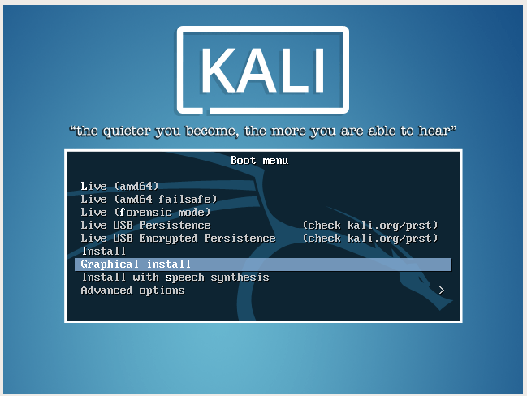

kali linux используется для хакинга. Устанавливаться он будет поверх подготовленной виртуальной связки из прeдыдущей практики. Если вы ещё не поставили VirtualBox с Whonix-Gateway, сделайте это сейчас. Причём устанавливать kali именно в виртуальную машину, а не как основную систему -- это правильно. Kali linux не гарантирует безопасность и лучше не использовать его вне ВМ.
Официальная страница загрузки kali linux. Нам нужен там файл Kali Linux Mate 64 Bit. Это установщик системы с нуля, которую мы сейчас проведём. Этот способ предпочтительный так как позволяет убедится в чистоте установки.
Есть вариант установки через готовый VirtualBox образ. Ссылка на его загрузку есть для VirtualBox есть внизу списка. Этот процесс намного проще, а проблем с такой виртуалкой обычно не возникает. Можно сначала попробовать поставить виртуалку через импорт и вернуться к полной установке только в случае проблем
Полная установка
После того как скачали iso файл, откройте VirtualBox. Нажмите кнопку New(новая) вверху.

Задайте любое имя для новый машины. Тип системы поставьте linux. Версия - Debian (64-bit)
Количество оперативки оставляем стандартное. Его потом можно будет увеличить, если не будет хватать.
При выборе виртуального диска оставляем пункт "Создать новый виртуальный диск сейчас"
В появившемся менеджере указываем тип VDI.
Выбираем динамический размер.
Надо увеличить размер. Если тип диска динамический, то реальный файл с диском в системе будет увеличиться только по мере заполнения диска. То есть мы задаём сейчас лимит, максимальный размер диска, поэтому лучше поставить 70 ГБ. И нажимаем Create(Создать)
Появится новая машина в списке. Выделяем её одинарным кликом и нажимаем кнопку настроек вверху.
В пункте сеть тип первого адаптера меняем на Internal Network(внутренняя сеть) и в имени из списка выбираем Whonix.
Нажимаем ok, затем запускаем машину, кликаем два раза по ней. Появится окно с выбором расположения диска для запуска. Нажимаем там кнопку выбора файла и указываем путь к скачанному iso.

После запуска откроется меню kali. Выбираем в нём пункт Graphical install.

Сразу предлагает выбрать язык интерфейса и установки, лучше оставить его на английском, чтобы не добавлять уникальности системе. Я для примера русский поставлю чтобы проверить степень локализации.
Страну любую выбираем, проверяться эта информация не будет.
Русскую раскладку можно добавить, хотя реальной необходимости в русском на этой виртуалке нет.

Имя компьютера лучше оставляем по умолчанию.
Имя домена можно оставить пустым.
Пароль не обязательно должен быть очень сложным. Эта виртуалка защищена на уровне системы, да и без шифрования системы пароль на запуск системы мало что сделает, поэтому тут можно ограничится простым паролем.
При проверки интернет соединения адрес автоматически не будет настроен. Это нормальная ситуация. Напротив, если у вас автоматически нашлось интернет соединение, то, скорее всего, настройки интернет для виртуальной машины выставлены неправильно и надо перепроверить их.
Выбираем ручную настройку сети

Вводим в поле IP-address значение 10.152.152.22
Net mask: 255.255.192.0

Gate: 10.152.152.10
Address of DNS server: 10.152.152.10
Шифровать диск имеет смысл если виртуальная машина будет переноситься куда-то. Пока эта виртуалка будет храниться на машине с зашифрованным диском, дополнительное шифрование не требуется.
Используем весь виртуальный диск для установки
Отделение разделов даёт больше свобод управления, но на первое время лучше не отделять разделы, потому что поменять их размер потом не получится.
Подтверждаем правильность разметки

Тут надо выбрать Да(Yes). Все изменения происходят на виртуальном диске и не способны повредить файлы основной системы.
Этот выбор не очень важен
Дополнительные прокси не нужны, оставляем пустым
Даём grub записаться на диск. Не записывать grub можно тогда, когда на диске уже есть средство управления загрузкой. Поскольку каждая виртуальная система устанавливается на отдельной виртуальный диск, необходимости не ставить grub нет.
Выбираем наш единственный диск
К завершению система размонтирует диск и дополнительно извлекать ничего не надо. Просто нажимаем Продолжить(Next)
После повторного запуска машины нас встретит уже окно grub. Тут надо выбрать обычную загрузку или просто подождать 6 секунд.
При некоторых установках графическая оболочка почему-то не стартует автоматически. Тогда после загрузки мы попадаем в консоль. В таком случае надо сначала войти в систему с логином root и паролем указанным при установке
И после входа выполнить команду
startx
При успешной установке после запуска графической сессии перед нами должен появится такой интерфейс системы.